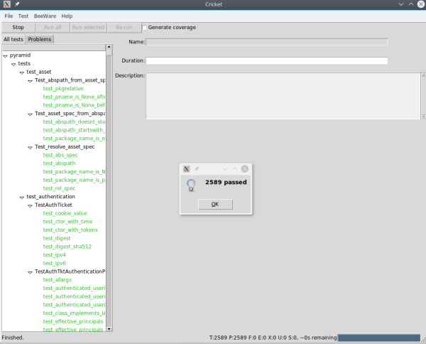
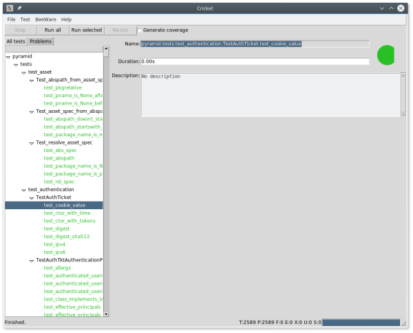
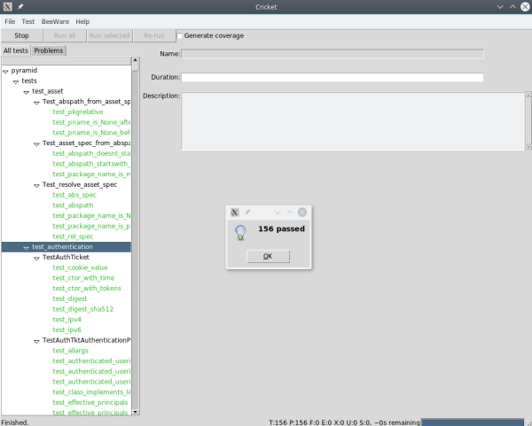

I've been writing tests for a while and running them with nose2. One of more labor-intensive interactions with nose2 is typing out paths to individual tests. Cricket -- a part of BeeWare suite solves copying-and-pasting test name problem and provides a nice user interface to summarize results from running test suite.
Installing dependencies
Cricket has a couple of system-level dependencies: IDLE editor and IDLE library and TkInter.
For Debian,
Running Cricket under Python 2.7 the following libraries need to be installed
apt-get install idle idle-python2.7 python-tk
Running Cricket Python 3.x the dependencies are
apt-get install idle3 idle-python3.5 python-tk
Installing cricket
Cricket is installed using pip, you can install it in the existing project, or add it in setup.py as one of the dependencies.
Cricket pip page -- https://pypi.python.org/pypi/cricket
(cricket-test)$ pip install cricket
Running cricket
For any python project written with unittest, run cricket-unittst for django projects, run cricket-django.
Runnig sample pyramid project with cricket
Getting started with cricket -- this example of running Pyramid test under Python 3.5
- Create Python 3 virtualenv
$ mkvirtualenv cricket-test --python `which python3`
(cricket-test) $ python -V
Python 3.5.2+
- Pull Pyramid source code
(cricket-test) $ git clone https://github.com/Pylons/pyramid.git
- Install Pyramid dependencies
(cricket-test) $ cd pyramid/
(cricket-test) $ pip install -e .
- Install dependencies to run tests
(cricket-test) $ pip install -e .[testing]
- Install cricket
(cricket-test) $ pip install cricket
- Run cricket
(cricket-test) $ cricket-unittest &
The following UI should appear. If you want to be able to use code coverage tool -- Duvet -- https://pypi.python.org/pypi/duvet, install it with pip using the following command
(cricket-test) $ pip install duvet
Cricket: running all test by pressing Run All
Cricket: copying single test, by selecting a test then pressing Run Selected
Cricket: running a group of tests, by selecting a top-level filename or class, then pressing Run Selected
Missing dependencies errors
If any of system packages is missing from the system the following errors will be triggered when trying to run Cricket.
Missing python-tkinter
Traceback (most recent call last):
File "/home/alex/.virtualenvs/cricket-test/bin/cricket-unittest", line 7, in <module>
from cricket.unittest.__main__ import main
File "/home/alex/.virtualenvs/cricket-test/local/lib/python2.7/site-packages/cricket/unittest/__main__.py", line 4, in <module>
from cricket.main import main as cricket_main
File "/home/alex/.virtualenvs/cricket-test/local/lib/python2.7/site-packages/cricket/main.py", line 13, in <module>
from tkinter import *
ImportError: No module named tkinter
Missing idle / idle-python
Traceback (most recent call last):
File "/home/alex/.virtualenvs/cricket-test/bin/cricket-unittest", line 7, in <module>
from cricket.unittest.__main__ import main
File "/home/alex/.virtualenvs/cricket-test/local/lib/python2.7/site-packages/cricket/unittest/__main__.py", line 4, in <module>
from cricket.main import main as cricket_main
File "/home/alex/.virtualenvs/cricket-test/local/lib/python2.7/site-packages/cricket/main.py", line 15, in <module>
from cricket.view import (
File "/home/alex/.virtualenvs/cricket-test/local/lib/python2.7/site-packages/cricket/view.py", line 29, in <module>
from tkreadonly import ReadOnlyText
File "/home/alex/.virtualenvs/cricket-test/local/lib/python2.7/site-packages/tkreadonly.py", line 15, in <module>
"to work out how to install IDLE and idlelib.")
Exception: idlelib could not be found. Check your operating system instructions to work out how to install IDLE and idlelib.
Resources
Cricket github page -- https://github.com/pybee/cricket
Duvet github page -- https://github.com/pybee/duvet
python.__init__ podcast: An interview with Russel Keith McGee -- http://podcastinit.podbean.com/e/episode-64-beeware-with-russell-keith-magee/